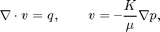
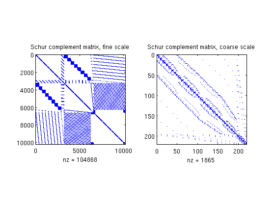

Contents
Multiscale Pressure Solver: Simple Corner-Point Grid with Linear Pressure Drop
Compare the fine-grid and the multiscale pressure solver by solving the single-phase pressure equation

for a simple corner-point grid model with isotropic, lognormal permeability. This example is built upon the flow-solver tutorial "A Simple Corner-Point Model", but herein we generate a different version of the test grid that has a single fault.
require coarsegrid
Define and visualize the model
We construct a corner-point grid that with sloping pillars and wavy layers, construct a lognormal layered permeability field and use the default single-phase fluid with unit viscosity
nx = 20; ny = 20; nz = 8;
Nx = 5; Ny = 4; Nz = 2;
verbose = true;
grdecl = simpleGrdecl([nx, ny, nz], 0.15);
G = processGRDECL(grdecl); clear grdecl;
G = computeGeometry(G);
Set fluid and rock properties
[rock.perm, L] = logNormLayers([nx, ny, nz], [100, 400, 50, 500]); fluid = initSingleFluid('mu' , 1*centi*poise , ... 'rho', 1014*kilogram/meter^3); rock.perm = convertFrom(rock.perm, milli*darcy); % mD -> m^2
Boundary conditions: pressure of one bar on the west-side boundary and zero on the east-side boundary.
westFaces = find(G.faces.centroids(:,1) == 0); bc = addBC([], westFaces, 'pressure', ... repmat(1*barsa(), [numel(westFaces), 1])); xMax = max(G.faces.centroids(:,1)); eastFaces = find(G.faces.centroids(:,1) == xMax); bc = addBC(bc, eastFaces, 'pressure', ... repmat(0, [numel(eastFaces), 1]));
We visualize the model, performing a trick to manipulate the labels of the color bar to show the underlying values rather than the logarithm
clf plotCellData(G, log10(rock.perm(:))); shading faceted title('Log_{10} of permeability [m^2]') view(3), camproj perspective, axis tight off, camlight headlight h = colorbar; c = round(caxis); c = c(1) : c(2); set(h, 'YTick', c, 'YTickLabel', num2str(10.^c'));
Partition the grid
We partition the fine grid into coarse blocks, ensuring that the coarse blocks do not cross the layers in our model (given by the vector L).
p = partitionLayers(G, [Nx, Ny], L); subplot('Position',[0.02 0.15 0.46 0.7]), plotCellData(G, mod(p,9)); shading faceted; outlineCoarseGrid(G,p,'LineWidth',3); view(3), axis tight off, title('Before processing');
Here we can see that several blocks are disconnected over the fault. We therefore postprocess the grid to make sure that all blocks consist of a connected set of fine cells. Whereas this step is superfluous for Cartesian grids, the example shows that it is required for grids that are only logically Cartesian (e.g., corner-point and other mapped grids that may contain non-neighbouring connections and inactive or degenerate cells).
p = processPartition(G, p, 'Verbose', verbose); subplot('Position',[0.52 0.15 0.46 0.7]), plotCellData(G, mod(p,9)); shading faceted outlineCoarseGrid(G,p,'LineWidth',3); view(3), axis tight off, title('After processing');
Elapsed time is 0.234837 seconds.
Having obtained a reasonable partitioning, we build the coarse-grid structure.
CG = generateCoarseGrid(G, p, 'Verbose', verbose);
Assemble and solve system
Finally, we assemble the mimetic system in hybrid form and solve the corresponding linear equations.
S = computeMimeticIP(G, rock, 'Verbose', true); xRef = solveIncompFlow(initResSol(G, 0), G, S, fluid, ... 'MatrixOutput', true, 'bc', bc); mu = fluid.properties(xRef); kr = fluid.relperm(ones([G.cells.num, 1]), xRef); mob = kr ./ mu; CS = generateCoarseSystem(G, rock, S, CG, mob, ... 'bc', bc, 'Verbose', verbose); xMs = solveIncompFlowMS(initResSol(G, 0), G, CG, p, S, CS, fluid, ... 'bc', bc, 'Solver', S.type, 'MatrixOutput', true);
Using inner product: 'ip_simple'. Computing cell inner products ... Elapsed time is 0.321616 seconds. Assembling global inner product matrix ... Elapsed time is 0.003035 seconds. Computing flux and pressure basis functions... Elapsed time is 1.431095 seconds.
Plot Schur complement matrices
The Schur complement matrices are formed as part of the solution process and it can be instructive to see how this matrix differs on the fine and coarse scale
clf, subplot(1,2,1), spy(xRef.A), title('Schur complement matrix, fine scale'); subplot(1,2,2), spy(xMs.A), title('Schur complement matrix, coarse scale');
Plot results
We end the example by comparing pressures and fluxes computed on the fine and the coarse scale
clf cellNo = rldecode(1:G.cells.num, diff(G.cells.facePos), 2) .'; plot_var = @(x) plotCellData(G, x); plot_pres = @(x) plot_var(convertTo(x.pressure(1:G.cells.num), barsa())); plot_flux = @(x) plot_var(accumarray(cellNo, ... abs(convertTo(faceFlux2cellFlux(G, x.flux), meter^3/day)))); subplot('Position',[0.02 0.52 0.46 0.42]), plot_pres(xRef); shading faceted, title('Pressure Fine [bar]') view(3), camproj perspective, axis tight off, camlight headlight cax = caxis; colorbar subplot('Position',[0.52 0.52 0.46 0.42]), plot_pres(xMs); outlineCoarseGrid(G, p, 'FaceColor', 'none', 'LineWidth', 2); title('Pressure Coarse [bar]') view(3), camproj perspective, axis tight off, camlight headlight caxis(cax); colorbar subplot('Position',[0.02 0.02 0.46 0.42]), plot_flux(xRef); shading faceted, title('Flux intensity Fine') view(3), camproj perspective, axis tight off, camlight headlight cax2 = caxis; colorbar subplot('Position',[0.52 0.02 0.46 0.42]), plot_flux(xMs); title('Flux intensity Coarse') outlineCoarseGrid(G, p, 'FaceColor', 'none', 'LineWidth', 2); view(3), camproj perspective, axis tight off, camlight headlight caxis(cax2); colorbar

Plot a few selected flux basis functions
Finally, we display a graphical representation of a few flux basis functions. Relying on the fact that function 'processPartition' preserves the index of unsplit coarse blocks, we compute the index of the coarse block at original coarse logical position (5,2,1) and its Cartesian neighbour (5,3,1). Similarly, we compute the block index of the coarse block at original coarse position (2,3,3) and its Cartesian lower neighbour (2,3,4).
part_size = [Nx, Ny, numel(L) - 1]; % Cartesian size of original partition b521 = sub2ind(part_size, 5, 2, 1); b531 = sub2ind(part_size, 5, 3, 1); b233 = sub2ind(part_size, 2, 3, 3); b234 = sub2ind(part_size, 2, 3, 4); disp('Block numbers:') disp([b521, b531; b233, b234])
Block numbers:
10 15
52 72
The flux basis functions are stored in a packed data structure indexed by coarse faces. We therefore need to retrieve the face numbers of the coarse faces connecting each of the coarse block pairs defined above. This information is indirectly available in the coarse grid topology matrix, CG.faces.neigbors. As the block numbers may come in any order on a row in the topology matrix, we sort the individual rows to have a deterministic sort order.
faces = find(ismember(sort(CG.faces.neighbors , 2), ... sort([b521, b531; b233, b234], 2), 'rows')) %#ok
faces = 181 295
We now extract the individual basis functions values on 'faces'. A further complication is that the actual values stored in the packed storage format is 'B' times the flux values, so we need to multiply by the inverse 'B' matrix, S.BI, in order to extract the flux values.
bf = S.BI * extractBF({ CS.basis{faces} }, size(G.cells.faces,1), CG);
Finally, compute plotting data (accumulated total flux in each cell) for each individual basis function, and normalize the data to have same colour limit for each basis function.
d = sparse(cellNo, 1 : size(G.cells.faces,1), 1) * abs(bf); d = bsxfun(@rdivide, d, max(d));
Extract the fine-scale cells in each of the four coarse blocks for plotting purposes.
blk_cells = @(b) find(p == b); b521 = blk_cells(b521); b531 = blk_cells(b531); % Connected by faces(1) b233 = blk_cells(b233); b234 = blk_cells(b234); % Connected by faces(2) clf subplot('Position', [0.02, 0.15, 0.46, 0.7]), plotGrid(G, 'FaceColor', 'none', 'EdgeAlpha', 0.1); plotGrid(G, b521, 'FaceColor', 'r', 'EdgeAlpha', 0.1, 'FaceAlpha', 0.5); plotGrid(G, b531, 'FaceColor', 'b', 'EdgeAlpha', 0.1, 'FaceAlpha', 0.5); plotGrid(G, b233, 'FaceColor', 'c', 'EdgeAlpha', 0.1, 'FaceAlpha', 0.5); plotGrid(G, b234, 'FaceColor', 'y', 'EdgeAlpha', 0.1, 'FaceAlpha', 0.5); view(3), axis tight off, title('Selected coarse blocks') subplot('Position', [0.52, 0.15, 0.46, 0.7]), plotGrid(G, 'FaceColor', 'none', 'EdgeAlpha', 0.1); plotCellData(G, d(:,1), [b521; b531], 'FaceAlpha', 0.5); plotCellData(G, d(:,2), [b233; b234], 'FaceAlpha', 0.5); view(3), axis tight off, title('Normalized flux basis function values')